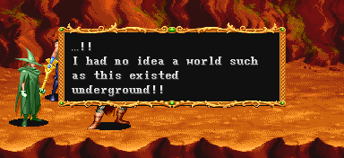
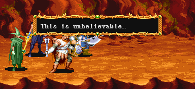
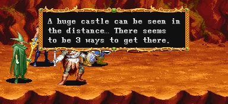
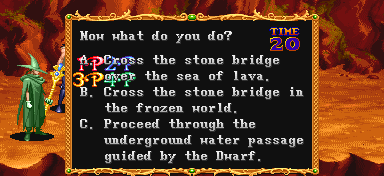

SELECTION 4

동굴 바닥에 도착한 일행. 이곳은 열기가 가득한 듯 하다.

"......!! 이런 지하 세계가 존재할 줄은 전혀 몰랐어!!"
(일어판)
"......! 地下にこんな世界が廣がっているなんて!!"
"......! 지하에 이런 세계가 펼쳐져 있었다니!!"

"믿기지가 않는군......"
(일어판)
"信じられない...。"
"믿을 수 없군......"

"저멀리 거대한 성이 보이는군.....그 성으로 가는데 3개의 길이 있는 것 같다."
(드워프가 없다면 '~2개의 길이 있는 것 같다.'로 바뀐다.)
(일어판)
"遠くの方に城らしきものが見えている...。城に行く道は、どうやら3通りあるようだ。"
"저 멀리 성 처럼 생긴것이 보인다......성에 가는 길은 아무래도 세가지가 있는 것 같다."

당신은 어떻게 하겠는가?
A. 용암바다 위 돌다리를 건넌다.
→ 스테이지 9-A(화염의 세계)로
B. 얼어붙은 세계 위 돌다리를 건넌다.
→ 스테이지 9-B(잃어버린 세계)로
C. 드워프가 지키고 있는 지하 수로를 지나간다.
→ 스테이지 9-C(비밀의 지하세계)로
(일어판)
"さて君だったら、どうする?"
"자 당신이라면 어떻게?"
A. 溶岩海の石橋を渡る。
A. 용암의 바다에 있는 돌다리를 건넌다.
B. 氷の世界の石橋を渡る。
B. 얼음의 세계에 있는 돌다리를 건넌다.
C. ド―ワフの案內で、地下水路を進む。
C. 드워프의 안내를 받아 지하수로를 나아간다.
※ 드워프가 있어야 선택문 C가 나온다.
▶ 스테이지 선택에 대한 이야기
기본적으로는 많은 수의 플레이어가 선택한 쪽으로 가게 된다.
그런데 각각 동일한 수의 플레이어가 다른곳을 선택했다면 A > B > C 순으로 가게 된다.
예를 들면 2명이 A를 선택하고 2명이 C를 선택했다면 A로 결정된다.
2명이 B를 선택하고 2명이 C를 선택했다면 B로 결정된다.
Copyright ⓒ 2007-2008 Crassus & Legon. All rights reserved.